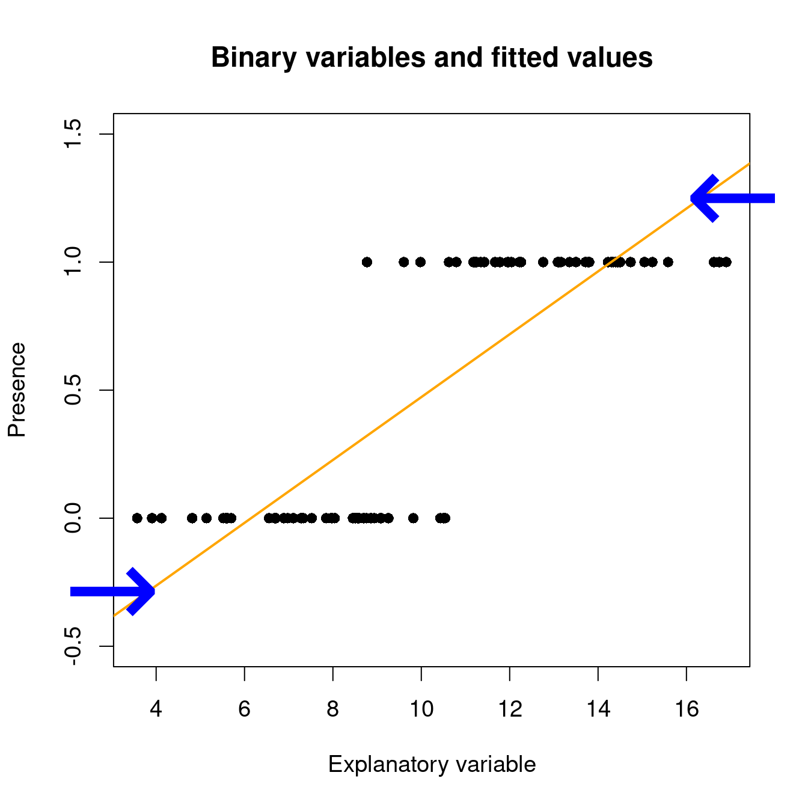

Chapitre 6 GLM avec une distribution binomiale
Les variables binaires sont fréquentes en écologie : on observe un phénomène \(Y\) ou son «absence». Par exemple, on note souvent la présence ou l’absence d’espèces lors d’études de terrain. Le but est généralement de déterminer si la présence d’une espèce est influencée par différentes variables environnementales. D’autres exemples courants sont la présence/absence d’une maladie au sein d’une population sauvage, l’observation/non-observation d’un comportement spécifique et la survie/mort d’un individu. Habituellement, nous sommes interessés à une question telle que: comment l’occurence d’une espèce varie en fonction des conditions de son environnement?
\[Occurrences = f(Environment)\]
Sous un modèle linéaire, les valeurs attendues peuvent se trouver en dehors de l’étendu de [0, 1] avec la fonction ‘lm()’:
# set up some binary data
Pres <- c(rep(1, 40), rep(0, 40))
rnor <- function(x) rnorm(1, mean = ifelse(x == 1, 12.5, 7.5),
sd = 2)
ExpVar <- sapply(Pres, rnor)
# linear model with binary data...
lm(Pres ~ ExpVar)
Lorsqu’on prédit la probabilité d’observer un phénomène Y qui est une variable binaire, la valeur prédite doit se trouver entre 0 et 1 : c’est l’étendue possible d’une probabilité !
6.1 GLM avec des données binomiales: lien logit
Tel que vu dans la section précdente, un modèle de régression qui utilise une variable binaire comme variable réponse est l’un de plusieurs modèles linéaires généralisés (GLM) et est appelé régression logistique ou modèle logit.
Un modèle linéaire généralisé est composé de prédicteurs linéaires:
\[\underbrace{g(\mu_i)}_{Link~~function} = \underbrace{\beta_0 + \beta_1X_1~+~...~+~\beta_pX_p}_{Linear~component}\]
Les chances mettre nos valeurs attendues sur une échelle de 0 à +Inf.
On prend ensuite les logarithmes, et calcule le logit:
\[\eta_i = \text{logit}(\mu_i) = \log(\frac{\mu_i}{1-\mu_i})\]
avec \(\mu\) étant la valeur attendue (probabilité que \(Y = 1\)), et les valeurs attendues s’étendant de -Inf à +Inf.
Dans ‘R’, la présence (ou succès, survie…) est habituellement codée par un 1 et une absence (ou échec, mort…) par un 0. On effectue une régression logistique (ou n’importe quel GLM) à l’aide de la fonction glm(). Cette fonction diffère un peu de la fonction de base lm(), car elle permet de spécifier une distribution statistique autre que la distribution normale.
glm(formula,
family = ???, # this argument allows us to set a probability distribution!
data,
...)Nous avons déjà vu que les variables binaires ne sont pas distribuées normalement (i.e. on observe un pic à 0 et un pic à 1 et rien entre les deux). Dans ‘R’, on spécifie la distribution statistique du modèle avec l’argument family. Pour la régression logistique, on l’indique de la façon suivante : family = 'binomial’.
| Distribution de \(Y\) | Nom du fonction lien | Fonction lien | Modèle | R |
|---|---|---|---|---|
| Normale | Identité | \(g(\mu) = \mu\) | \(\mu = \mathbf{X} \boldsymbol{\beta}\) | gaussian(link="identity") |
| Binomiale | Logit | \(g(\mu) = \log\left(\dfrac{\mu}{1-\mu}\right)\) | \(\log\left(\dfrac{\mu}{1-\mu}\right) = \mathbf{X} \boldsymbol{\beta}\) | binomial(link="logit") |
| Poisson | Log | \(g(\mu) = \log(\mu)\) | \(-\mu^{-1} = \mathbf{X} \boldsymbol{\beta}\) | poisson(link="log") |
| Exponentielle | Inverse négative | \(g(\mu) = -\mu^{-1}\) | \(\log(\mu) = \mathbf{X} \boldsymbol{\beta}\) | Gamma(link="inverse") |
Dans R, nous pouvons donc construire notre GLM binomial avec un lien logit de cette façon:
# This is the syntax for a binomial GLM with a logit link
glm(formula,
family = binomial(link = "logit"), # this is also known as logistic
data,
...)6.2 Exemple
Construisons notre premier modèle linéaire généralisé! Ici, nous voulons construire notre modèle en utilisant le jeu de données mites:
# setwd('...')
mites <- read.csv("data/mites.csv", header = TRUE)
str(mites)## 'data.frame': 70 obs. of 9 variables:
## $ Galumna : int 8 3 1 1 2 1 1 1 2 5 ...
## $ pa : int 1 1 1 1 1 1 1 1 1 1 ...
## $ totalabund: int 140 268 186 286 199 209 162 126 123 166 ...
## $ prop : num 0.05714 0.01119 0.00538 0.0035 0.01005 ...
## $ SubsDens : num 39.2 55 46.1 48.2 23.6 ...
## $ WatrCont : num 350 435 372 360 204 ...
## $ Substrate : chr "Sphagn1" "Litter" "Interface" "Sphagn1" ...
## $ Shrub : chr "Few" "Few" "Few" "Few" ...
## $ Topo : chr "Hummock" "Hummock" "Hummock" "Hummock" ...Nous pouvons modéliser notre régression logistique avec les doonées de présence de Galumna sp. en relation avec le contenu en eau et la topographie comme s’en suit, en utilisant glm() et l’argument family:
logit.reg <- glm(pa ~ WatrCont + Topo, data = mites, family = binomial(link = "logit"))Pour la sortie du modèle:
summary(logit.reg)##
## Call:
## glm(formula = pa ~ WatrCont + Topo, family = binomial(link = "logit"),
## data = mites)
##
## Deviance Residuals:
## Min 1Q Median 3Q Max
## -2.0387 -0.5589 -0.1594 0.4112 2.0252
##
## Coefficients:
## Estimate Std. Error z value Pr(>|z|)
## (Intercept) 4.464402 1.670622 2.672 0.007533 **
## WatrCont -0.015813 0.004535 -3.487 0.000489 ***
## TopoHummock 2.090757 0.735348 2.843 0.004466 **
## ---
## Signif. codes: 0 '***' 0.001 '**' 0.01 '*' 0.05 '.' 0.1 ' ' 1
##
## (Dispersion parameter for binomial family taken to be 1)
##
## Null deviance: 91.246 on 69 degrees of freedom
## Residual deviance: 48.762 on 67 degrees of freedom
## AIC: 54.762
##
## Number of Fisher Scoring iterations: 6Est-ce que la sortie vous dit quelque chose? Ressemble-t-elle à la sortie de summary.lm()? En effet! Cependant, vous remarquerez qu’il ya des petites différences (p.ex. le paramètre de dispersion) qui sont discutées plus loin dans ce guide!
6.3 Défi 1
Avec le jeu de données bacteria (provenant du package MASS), modélisez la présence de H. influenzae en relation avec le traitement et la semaine du test.
Commençez avec le modèle complet, puis réduisez-le pour obtenir le modèle le plus parcimonieux.
Chargez le package MASS et le jeu de données bacteria:
## 'data.frame': 220 obs. of 6 variables:
## $ y : Factor w/ 2 levels "n","y": 2 2 2 2 2 2 1 2 2 2 ...
## $ ap : Factor w/ 2 levels "a","p": 2 2 2 2 1 1 1 1 1 1 ...
## $ hilo: Factor w/ 2 levels "hi","lo": 1 1 1 1 1 1 1 1 2 2 ...
## $ week: int 0 2 4 11 0 2 6 11 0 2 ...
## $ ID : Factor w/ 50 levels "X01","X02","X03",..: 1 1 1 1 2 2 2 2 3 3 ...
## $ trt : Factor w/ 3 levels "placebo","drug",..: 1 1 1 1 3 3 3 3 2 2 ...Ce jeu de données a été créée pour tester la présence de la bactérie H. influenzae chez les enfants avec otitis media dans les territoire nordique de l’Australie. Dr A. Leach a testé les effets d’un un médicament sur 50 enfants ayant des antécédents d’otite moyenne dans le Territoire du Nord de l’Australie. Les enfants ont été choisis aléatoirement pour recevoir le médicament ou un placebo. La présence de H. influenzae a été contrôlée aux semaines 0, 2, 4, 6 et 11 : 30 de ces contrôles étaient manquants et ne sont pas inclus dans ce jeu de données.
Cliquez pour voir la solution au Défi 1!
# Challenge 1 - Solution
# Fit models (full to most parsimonious)
model.bact1 <- glm(y ~ trt * week, data = bacteria, family = binomial)
model.bact2 <- glm(y ~ trt + week, data = bacteria, family = binomial)
model.bact3 <- glm(y ~ week, data = bacteria, family = binomial)
# Let's compare these models using a likelihood ratio test
# (LRT).
anova(model.bact1, model.bact2, model.bact3, test = "LRT")## Analysis of Deviance Table
##
## Model 1: y ~ trt * week
## Model 2: y ~ trt + week
## Model 3: y ~ week
## Resid. Df Resid. Dev Df Deviance Pr(>Chi)
## 1 214 203.12
## 2 216 203.81 -2 -0.6854 0.70984
## 3 218 210.91 -2 -7.1026 0.02869 *
## ---
## Signif. codes: 0 '***' 0.001 '**' 0.01 '*' 0.05 '.' 0.1 ' ' 1# Which model is the best candidate?En se basant sur ces résultats, on doit choisir le modèle 2 comme celui représentant le mieux le jeu de données.
6.4 Interpréter la sortie d’une régression logistique
La sortie du modèle de régression logistique indique que les deux
variables explicatives (WatrCont et Topo) sont significatives:
# Extracting model coefficients
summary(logit.reg)$coefficients## Estimate Std. Error z value Pr(>|z|)
## (Intercept) 4.46440199 1.670622482 2.672299 0.0075333598
## WatrCont -0.01581255 0.004535069 -3.486728 0.0004889684
## TopoHummock 2.09075654 0.735348234 2.843220 0.0044660283Mais comment interprète-on les coefficients estimés?
Rappelez-vous que nous avons effectué une transformation des valeurs prédites par le modèle (i.e. la probabilité que \(Y = 1\)), alors il faut utiliser une fonction inverse pour pouvoir interpréter correctement les résultats.
6.4.1 Un exemple avec le lien d’identité
Si nous avions utilisé une fonction de lien d’identité, l’interprétation serait beaucoup plus facile.
En assumant un résultat binaire \(y\) et deux covariables \(x_1\) et \(x_2\) et une constante, la probabilité d’avoir un résultat favorable ( \(y = 1\) ) est donné par:
\[Pr(y_i = 1) = p = g^{-1(\beta_0 + x_{1i}\beta_1 + x_{2i}\beta_2)}\]
où \(g^{-1}()\) est la fonction lien d’identité inverse.
Pour un lien d’identité, l’interprétation du coefficient \(\beta_1\) est plutôt simple: Pour un incrément d’une unité de \(x_1\), \(\beta_1\) donne une différence constante du résultat.
\[\Delta{y_i} = (\beta_0 +\beta_1(\color{red}{x_{1i} + 1}) + \beta_2x_{2i}) - (\beta_0 + \beta_1x_{1i} + \beta_2x_{2i})\]
\[\Delta{y_i} = \beta_1\]
6.4.2 Interprétation avec un lien logit
Pour un modèle linéaire logistic avec deux covariables \(x_1\) et \(x_2\), nous avons:
\[log({\dfrac{p}{1-p}})=\beta_0 + \beta_1x_{1i} + \beta_2x_{2i}\]
Ce qui correspong à notre ratio du log de nos cotes! Nous pouvons ainsi utiliser une fonction exponentielle pour réécrire notre modèle et obtenir le ratio des cotes:
\[\dfrac{p}{1-p}=exp(\beta_0 + \beta_1x_{1i} + \beta_2x_{2i})\]
Si nous voulons ainsi convertir les cotes en probabilité, selon le coefficient \(\alpha\) nous pouvons utiliser la fonction de lien logit inverse (aussi appelé la fonction logistic):
\[ Pr(y_i = 1) = logit^{-1}(\alpha) = \dfrac{1}{1 + exp(-\alpha)} = (\dfrac{1}{1 + exp(-\alpha)}) * (\dfrac{exp(\alpha)}{exp(\alpha)}) = \dfrac{exp(\alpha)}{exp(\alpha) + 1}\]
Pour en revenir à notre modèle, cela nous donne:
\[Pr(y_i = 1) = \dfrac{exp(\beta_0 + \beta_1x_{1i} +\beta_2 x_{2i})}{1 + exp{(\beta_0 + \beta_1x_{1i} + \beta_2x_{2i})}}\]
Puisque la fonction de lien inverse n’Est pas linéaire, cela reste difficile d’interpréter le coefficient. Cependant, nous pouvons observer ce qui arrive à la différence avec un incrément d’une unité de \(x_1\):
\[\Delta{y_i} = \dfrac{\exp(\beta_0 + \beta_1(\color{red}{x_{1i} + 1}) + \beta_2x_{2i})}{1 + \exp{(\beta_0 + \beta_1(\color{red}{x_{1i} + 1}) + \beta_2x_{2i})}} - \dfrac{\exp(\beta_0 + x_{1i}\beta_1 + \beta_2x_{2i})}{1 + \exp{(\beta_0 + \beta_1x_{1i} + \beta_2x_{2i})}}\]
\[\Delta{y_i} = \exp(\beta_1)\ \]
Lorsque \(x_1\) augmente d’une unité, les cotes augmentes par un facteur de \(\exp(\beta_1)\). à noter que les valeurs des cotes ici sont considérées dans une situation où les autres paramètres sont constants.
Avec ceci, nous pouvons finalement interpréter nos coefficients et les résultats de nos modèles!
exp(logit.reg$coefficients[2])## WatrCont
## 0.9843118Pour obtenir l’intervalle de confiance sur l’échelle des cotes :
exp(confint(logit.reg)[2, ])## 2.5 % 97.5 %
## 0.9741887 0.9919435Lorsque la cote est inférieure à 1, l’interprétation est un peu plus compliquée. Si c’est le cas, il faut prendre la valeur inverse de la cote (i.e. 1 divisé par la cote) pour faciliter l’interprétation.
L’interprétation revient à dire comment l’observation d’un phénomène est MOINS probable. Pour le contenu en eau du sol, la cote est de 0.984. L’inverse est: \[\dfrac{1}{0.984} = 1.0159\].
Ceci signifie que l’augmentation d’une unité en contenu en eau diminue la vraisemblance d’observer la présence de Galumna sp. de 1.0159. On peut aussi l’exprimer en pourcentage en soustrayant 1 à cette valeur : \((1.0159 - 1) * 100 = 1.59%\).
Il est 1.59 % moins vraisemblable d’observer Galumna sp. avec une augmentation d’une unité de contenu en eau. Pour se convaincre qu’on fait la bonne interprétation, on peut représenter graphiquement les résultats de la présence de Galumna sp. en fonction du contenu en eau du sol. On voit qu’en moyenne la présence de Galumna sp. est plus élevée lorsque le contenu en eau est faible.
Lorsqu’un paramètre estimé est entre 0 et 1 sur l’échelle des cotes, la relation entre la variable réponse et la variable explicative est négative. Si la valeur est supérieure à 1, la relation est positive. Si l’intervalle de confiance inclut la valeur 1, la relation n’est pas significative.
Rappelez-vous qu’une valeur de 1 sur l’échelle des cotes signifie que la probabilité d’observer un phénomène Y est la même que celle de ne pas observer ce phénomène (i.e. quand \(p\) = 0.5, 0.5/(1-0.5) = 1).
Faisons de même avec la topographie:
exp(logit.reg$coefficients[3])## TopoHummock
## 8.091034Le paramètre estimé pour la topographie est de 2.091 sur l’échelle des cotes en log. Donc, la probabilité est donnée par :
\(1/(1+1/exp(2.091)) = 0.89\) ce qui équivaut à \(1/(1+1/8.09)\).
Prenez note que la cote pour une variable explicative est calculée
lorsque les autres variables sont gardées constantes. La topographie a
une cote de 8.09. Ceci signifie que la probabilité d’observer Galumna sp. est 8.09 fois plus vraisemblable lorsque la topographie est de type hummock plutôt que blanket.
Calculons cette valeur de cote sans utiliser la fonction exp():
On commence avec la valeur de cote pour la topographie du modèle logit.reg:
\(µ/ (1 - µ) = 8.09\)
On réarrange pour isoler \(µ\) :
\(µ\) = 8.09(1 - \(µ\)) = 8.09 - 8.09\(µ\)
8.09\(µ\) + \(µ\) = 8.09
\(µ\)(8.09 + 1) = 8.09
\(µ\) = 8.09 / (8.09 + 1)
\(µ\) = 1 / (1 + (1 / 8.09)) = 0.89
On obtient le même résultat sans utiliser la fonction logit inverse !
6.5 Pouvoir prédictif et validation du modèle
Une façon simple et intuitive d’estimer le pouvoir explicatif d’un GLM est de comparer la déviance du modèle à celle d’un modèle nul. La déviance peut être vue comme une généralisation du concept de la somme des carrés résiduelle lorsque le modèle est estimé par maximisation de la vraisemblance (i.e. la méthode par laquelle on estime les paramètres d’un GLM). Ceci nous permet de calculer un pseudo-R2, une statistique similaire au R2 dans une régression des moindres carrés (i.e. la méthode utilisée pour estimer les paramètres d’une régression linéaire de base). La forme générique pour calculer un pseudo-R2 est :
\[\text{pseudo-R}^2 = \dfrac{\text{déviance nulle} - \text{déviance résiduelle}}{\text{déviance nulle}}\]
où «déviance du modèle nul» est la déviance du modèle nul et «déviance résiduelle» est la déviance résiduelle du modèle d’intérêt.La différence est divisée par la déviance du modèle nul afin de contraindre le pseudo-R2 entre 0 et 1.
Le modèle nul correspond à un modèle sans variable explicative. Dans R, on l’indique de la façon suivante :
null.model <- glm(Response.variable ~ 1, family = binomial).
Une unité de déviance est la mesure de distance entre \(y\) et \(μ\).
\[{\displaystyle d(y,y)=0}\] \[{\displaystyle d(y,\mu )>0\quad \forall y\neq \mu }\]
La déviance totale \({\displaystyle D(\mathbf {y} ,{\hat {\boldsymbol {\mu }}})}\) d’une modèle avec ses prédictions \({\hat {\boldsymbol {\mu }}}\) de l’observation \(\mathbf {y}\) est la somme de ses unités de déviances : \[{\displaystyle D(\mathbf {y} ,{\hat {\boldsymbol {\mu }}})=\sum _{i}d(y_{i},{\hat {\mu }}_{i})}\]
Maintenant, la déviance d’un modèle estimé \({\hat {\mu }}=E[Y|{\hat {\theta }}_{0}]\) peut être défini par sa vraisemblance: \[D(y,{\hat {\mu }})=2{\Big (}\log {\big (}p(y\mid {\hat {\theta }}_{s}){\big )}-\log {\big (}p(y\mid {\hat {\theta }}_{0}){\big )}{\Big )}\] avec \(\hat \theta_0\) dénotant la valeurs ajustées du paramètre dans le modèle réduit, alors que \({\displaystyle {\hat {\theta }}_{s}}\hat \theta_s\) dénotes les paramètres ajustés pour le modèle saturé.
La déviance résiduelle est définie comme 2 fois le ratio de la vraisemblence en log du modèle saturé comparé au modèle réduit: \[D(y,{\hat {\mu }})=2{\Big (}\log {\big (}p(\text{modèle saturé}){\big )}-\log {\big (}p(\text{modèle réduit}){\big )}{\Big )}\]
Enfin, la déviance nulle est définie comme 2 fois le ratio de la vraisemblence en log du modèle saturé comparé au modèle réduit (i.e. les variables prédictrices = 1).
\[D(y,{\hat {\mu }})=2{\Big (}\log {\big (}p(\text{modèle saturé}){\big )}-\log {\big (}p(\text{modèle nul}){\big )}{\Big )}\]
Maintenant, nous pouvons le faire dans R. Comparons la déviance de notre modèle (déviance résiduelle) à la déviance d’un modèle nul (déviance nulle).
null.model <- glm(response.variable ~ 1, family = binomial)Le modèle saturé (ou complet) contient l’ensemble des variables prédisctrices:
full.model <- glm(response.variable ~ ., family = binomial)Les déviances résiduelles et nulles sont déjà stockées dans glm object:
# Les déviances résiduelle et nulle sont déjà enregistrées
# dans un objet de type glm.
objects(logit.reg)## [1] "aic" "boundary" "call"
## [4] "coefficients" "contrasts" "control"
## [7] "converged" "data" "deviance"
## [10] "df.null" "df.residual" "effects"
## [13] "family" "fitted.values" "formula"
## [16] "iter" "linear.predictors" "method"
## [19] "model" "null.deviance" "offset"
## [22] "prior.weights" "qr" "R"
## [25] "rank" "residuals" "terms"
## [28] "weights" "xlevels" "y"Nous pouvons mainteant utiliser ces déviances pour calculer la valeur du pseudo-R2:
# calcule pseudo-R2
pseudoR2 <- (logit.reg$null.deviance - logit.reg$deviance)/logit.reg$null.deviance
pseudoR2## [1] 0.4655937Les variables explicatives du modèle expliquent 46.6% de la variabilité de la variable réponse.
Un pseudo-R2 de McFadden ajusté, qui pénalise pour le nombre de prédicteurs, peut être calculé comme suit:

où K correspond au nombre supplémentaire de prédicteurs par rapport au modèle nul.
La qualité d’ajustement des modèles de régression logistique peut être exprimée par des variantes de statistiques pseudo-R2, telles que les mesures de Maddala (1983) ou de Cragg et Uhler (1970).
Lorsqu’on parle de régressions logistiques, les valeurs faibles de R2 sont courantes.
La fonction R DescTools::PseudoR2() permet de calculer plusieurs pseudo-R2. En spécifiant which = all, calculez toutes les statistiques en même temps.
logit.reg <- glm(pa ~ WatrCont + Topo, data = mites, family = binomial(link = "logit"))
DescTools::PseudoR2(logit.reg, which = "all")## McFadden McFaddenAdj CoxSnell Nagelkerke AldrichNelson
## 0.4655937 0.3998373 0.4549662 0.6245898 0.3776866
## VeallZimmermann Efron McKelveyZavoina Tjur AIC
## 0.6674318 0.5024101 0.7064093 0.5114661 54.7623962
## BIC logLik logLik0 G2
## 61.5078819 -24.3811981 -45.6229593 42.4835224fit <- Rsq(object = logit.reg)
HLtest(object = fit)
# La valeur de p est de 0.9051814. Donc, on ne rejète pas
# notre modèle. L'ajustement du modèle est bon.6.5.1 Défi 2
Évaluez l’ajustement et le pouvoir prédictif du modèle model.bact2.
Comment pouvez-vous améliorer le pouvoir prédictif du modèle ?
Cliquez pour voir la solution au Défi 2!
null.d <- model.bact2$null.deviance
resid.d <- model.bact2$deviance
bact.pseudoR2 <- (null.d - resid.d)/null.d
bact.pseudoR2## [1] 0.0624257C’est très faible!
Le pouvoir prédictif pourrait être augmenté en incluant plus de variables explicatives.
6.6 Représentation graphique des résultats
Lorsque le modèle a été validé, il peut être utile de représenter les
résultats graphiquement. Voici un exemple avec le paquet ggplot2. Revoir l’atelier 3 pour plus d’informations sur ce paquet.
ggplot(mites, aes(x = WatrCont, y = pa)) + geom_point() + stat_smooth(method = "glm",
method.args = list(family = binomial), se = TRUE) + xlab("Contenu en eau") +
ylab("Probabilité de présence") + ggtitle("Probabilité de présence de Galumna sp. en fonction du contenu en eau") +
theme_classic()